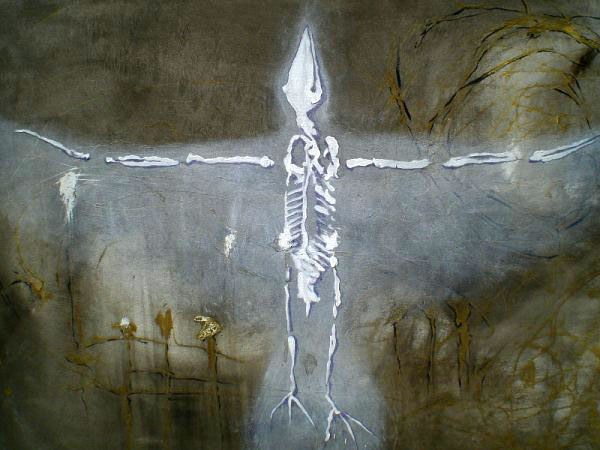
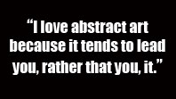
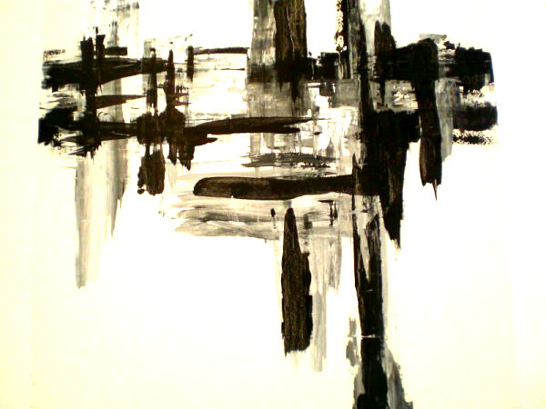

UNDISCOVERED continued...
By: Ciera Mckissick
Nancy has put painting on the back burner, though she is not sure why, but she continues embracing new directions and inspirations. With time, Hoffman has become cleaner, and more minimal in her approach, which at times she finds more difficult than the more complex pieces she’s done.
“Every time I think I have a grasp on her artistic style, she manages to completely reinvent herself as an artist, and I am once again left guessing,” her daughter says. “The combination of all of these elements truly makes her a great artist.”
Nancy Hoffman has been known to work on a piece for quite some time, only to completely scrap the idea, or paint over the canvas and start over. She says there is more time spent on gestation than anything else.
“It seems that there is much more time taken up by the unconscious process than by the conscious process,” Hoffman says. “The actual execution of the art is small compared to it, sometimes.”
For anyone with a craft, the worst critic is his or herself. Artists of any kind can be really hard on themselves when it comes to their work. Hoffman is modest when it comes to her art. She doesn’t seek out exposure; she simply does it because it is what she knows, and what knows her. She describes it as her “prayer.”
She says she has shown in a few places over the years, and actually sold out once. Mostly though she sells to family and friends, and has an art profile on Etsy.com. Her daughter, who is 23, doesn’t recall of her mom showing which means that it has been quite some time since Hoffman exhibited her talent to the masses.
“I think my Mom is undiscovered for a few reasons,” her daughter says. “Although her art is enlightening not only to me, but to many people who have had the chance to see her pieces, she does not see her talent in the way that we do.”
“She feels other artists are more talented than she is, although of course I think this is ludicrous,” Jess Hoffman says passionately. “Every artist is talented in their own way, and it is this variation which makes the art world an inspiring place. It is also her disability which impairs her from marketing her talent, but with my help, this will no longer inhibit her progression from being undiscovered to being known and respected.”
Nancy Hoffman’s body poses physical obstacles for the tedious nature of art. She has a history of nerve pain, and suffers from arthritis in her hands. She says their use is diminishing slowly over time, but saying this she has a tone of optimism saying that they can be adapted to.
“Both of those have led to artistic breakthroughs for me, some very small, just by modifying tools and having a new touch,” Hoffman says. “I recommend all artists work with unfamiliar tools. Get a pencil or paintbrush attached to the end of a long stick and draw or paint with it.”
Nancy Hoffman has spent her entire life creating an amazing collection of art, and has devoted years of hard work to her passion. Her daughter feels that recognition from those outside of her personal circle would “convince her of her talent and ignite her artistic passion for good.” She wants others to feel the inspiration that she feels when she thinks about her mother’s art.
“Discovery” holds many different meanings for me. We all pursue something with the hopes of sparking happiness within ourselves, and it is art which ignites this spark in my mom,” Jess Hoffman says.
“I know that the sole respect, love and appreciation I have given her throughout my life will always be enough “discovery” for her. But I want nothing more than to see the love I have for her art in the eyes of others,” she said.